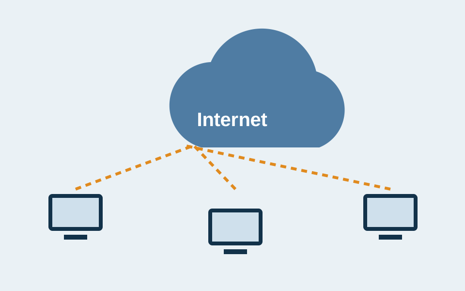
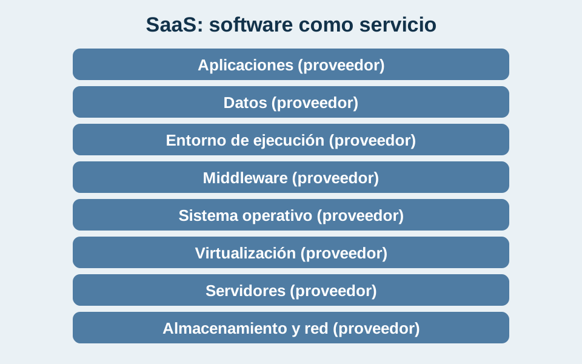
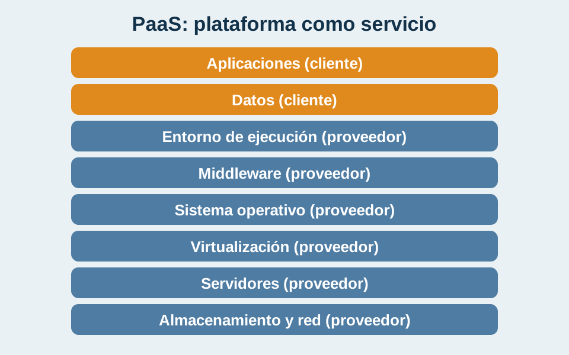
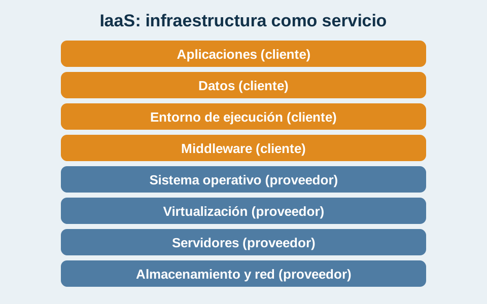
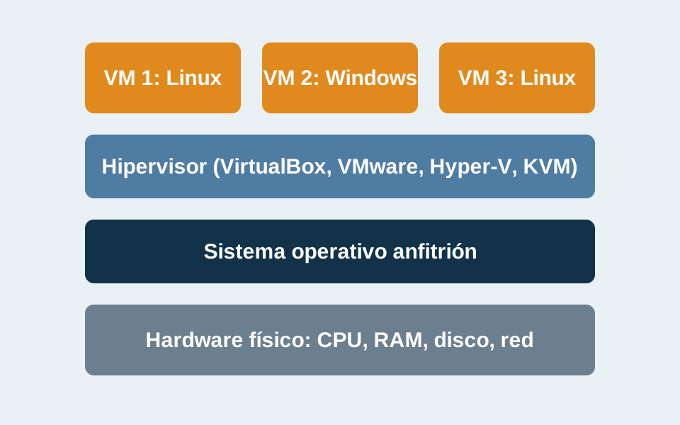
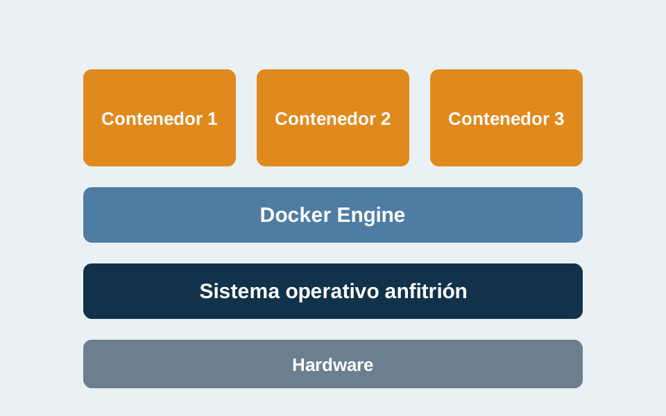

Cloud Computing
Conceptos básicos de la computación en la nube, sus modelos de servicio y las tecnologías que la hacen posible.
Cloud Computing
Modelo que ofrece recursos informáticos (servidores, almacenamiento, bases de datos, redes y software) a través de Internet, bajo demanda y con pago por uso. Evita comprar y mantener infraestructura propia y permite escalar los recursos según la necesidad.

SaaS: Software como Servicio
El proveedor entrega aplicaciones listas para usar desde el navegador y se encarga de toda la infraestructura, la plataforma y las actualizaciones. El usuario solo usa el servicio. Ejemplos: Gmail, Microsoft 365, Google Docs.

PaaS: Plataforma como Servicio
El proveedor ofrece un entorno para desarrollar, probar y desplegar aplicaciones sin administrar servidores ni sistemas operativos. El cliente gestiona su código y sus datos. Ejemplos: Google App Engine, Azure App Service, Heroku.

IaaS: Infraestructura como Servicio
El proveedor entrega recursos básicos de cómputo, almacenamiento y red, normalmente como máquinas virtuales. El cliente instala y administra el sistema operativo, el middleware y las aplicaciones. Ejemplos: Amazon EC2, Azure Virtual Machines, Google Compute Engine.

Virtualización
Tecnología que permite ejecutar varios sistemas operativos independientes sobre un mismo equipo físico mediante un hipervisor, que reparte CPU, memoria, disco y red entre las máquinas virtuales. Es la base de la nube porque permite aprovechar mejor el hardware y aislar los servicios.

Docker
Plataforma que empaqueta una aplicación con sus dependencias en una imagen y la ejecuta en contenedores. Los contenedores comparten el kernel del sistema anfitrión, por lo que son más ligeros y rápidos de iniciar que una máquina virtual, y funcionan igual en cualquier entorno.
